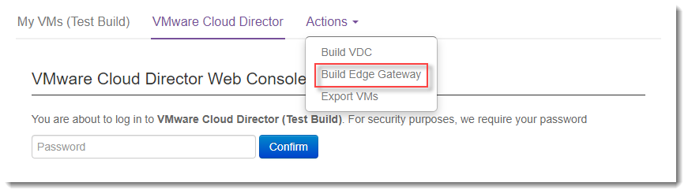
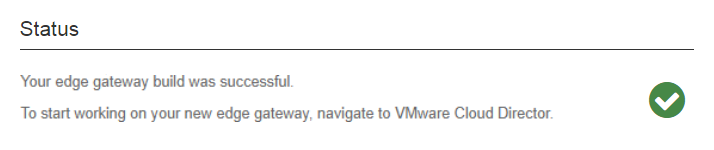
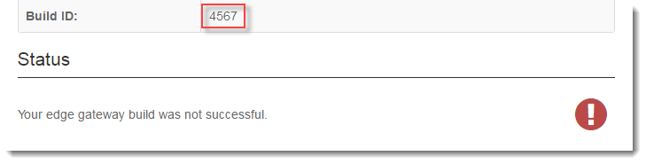

How to build an edge gateway using the UKCloud Portal
Overview
To enable your end users to access your VDC, you need to create an edge gateway to provide connectivity. The UKCloud Portal provides the ability to build an edge gateway, without having to raise a service request.
You can also create edge gateways using the Portal API. For more information, see the UKCloud Portal API User Guide.
Intended audience
To complete the steps in this guide, you must be a vCloud Director administrator.
Building an edge gateway
If your VDC is located on the Assured OFFICIAL security domain, its edge gateway provides access to the internet. If your VDC is located on the Elevated OFFICIAL security domain, its edge gateway provides access to your other VDCs in the Elevated OFFICIAL domain.
Note
You can build edge gateways in any of your compute services in regions 5 or 6, not just those you created using the Portal. For information about building compute services and VDCs, see the Getting Started Guide for UKCloud for VMware.
Log in to the UKCloud Portal.
For more detailed steps, see the Getting Started Guide for the UKCloud Portal.
In the Portal navigation panel, expand VMware Cloud and then select the compute service in which you want to create the edge gateway.
Note
To create an edge gateway using the Portal, the compute service must be in region 5 or 6.

From the Actions menu, select Build Edge Gateway.
Note
If this option is greyed out, either you do not have the appropriate permissions or your compute service is not in region 5 or 6.

On the Build Edge Gateway page, from the Associated VDC list, select the VDC for which you are creating the edge gateway.
The VDC names in the list include information about the security domain in which the VDC is located and the VM type of the VDC.
Note
The list of VDCs includes all VDCs in the compute service, whether or not they already have an edge gateway. If you select a VDC that already has an edge gateway of the same type, you will get an error.

Click Build.
The Edge Gateway Build Status page displays information about the edge gateway you're building and lets you know how the build is progressing.
Tip
You can stay on this page until the build is finished, or you can leave this page and check the status of the build later by going to the VMware Cloud Build History report.

When the build is complete, the page displays either a success or fail message.
If the build is successful, you can now start configuring the edge gateway. For a quick guide on how to do this, see How to build a virtual machine with UKCloud for VMware.

If the build is unsuccessful, raise a support ticket (quoting the Build ID) to resolve any issues.

Next steps
After you create your edge gateway, we recommend that you convert it to an advanced gateway to access the latest vCloud Director functionality. For more information, see How to convert your edge to an advanced gateway.
For information about how to configure your new edge gateway, see:
Feedback
If you find an issue with this article, click Improve this Doc to suggest a change. If you have an idea for how we could improve any of our services, visit UKCloud Ideas. Alternatively, you can contact us at products@ukcloud.com.